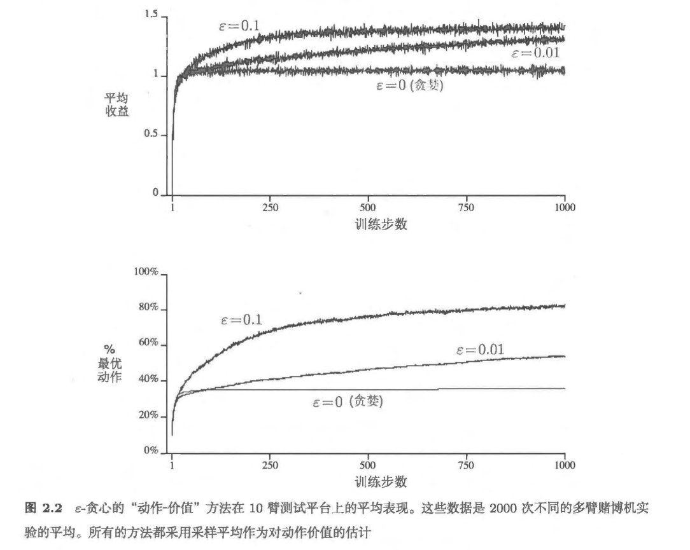
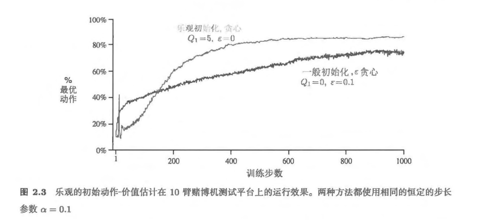
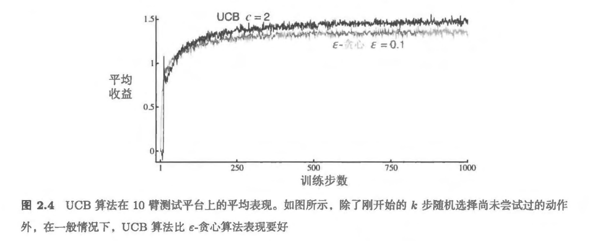
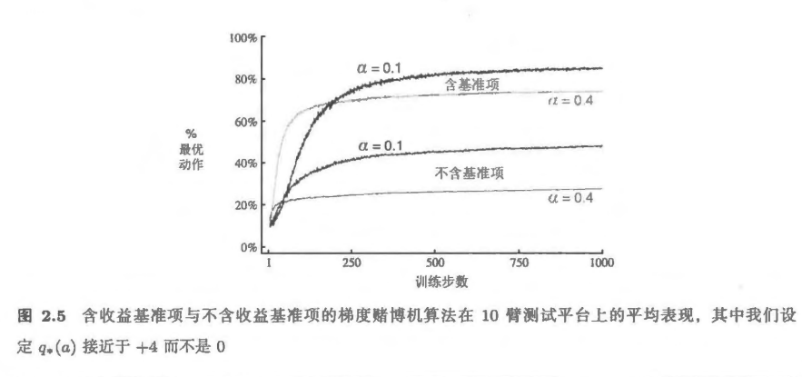
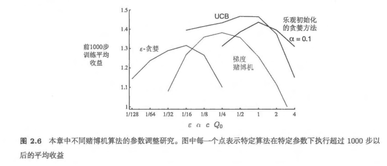

强化学习-第二章
多臂老虎机 (multiarms Bandits)
问题形式
你要重复地在k个选项或动作中进行选择 每次做出选择之后，你都会得到一定数值的收益，收益由你选择的动作决定的平稳概率分布产生。你的 目标是在某一段时间内最大化总收益的期望。
\(\epsilon - greedy方法\)
我们将在t时刻选择的动作记为 \(A_t\)，并将对应的收益记作\(R_t\)，任意一个动作a对应的价值，记作\(q_*(a)\)。 所以给定动作a时收益的期望 \[ q_*(a) \doteq \mathbb{E}[R_t \mid A_t=a] \]
现在我们不知道动作的价值，但是可以进行估计。 我们记动作a在时刻t时的价值的估计记作\(Q_t(a)\)，我们希望它接近\(q_*(a)\)
动作-价值方法
使用价值估计来进行动作的选择，这一类的方法被统称为"动作-价值方法"
动作的价值的真实值是选择这个动作时的期望收益，所以有： \[ Q_t(a) \overset{\cdot}{=} \frac{t \text{时刻前通过执行动作 } a \text{ 得到的收益总和}}{t \text{时刻前执行动作 } a \text{ 的次数}} = \frac{\sum_{i=1}^{t-1} R_i \cdot \mathbb{I}_{A_i = a}}{\sum_{i=1}^{t-1} \mathbb{I}_{A_i = a}} \]
\(\mathbb{I}\)是指示函数。当分母=0时候，我们设定\(Q_t(a)\)为一个具体的值。趋于无穷大时，根据大数定律，当采样次数\(Q_t(a)\)趋近于\(q_*(a)\).
那么在这种情况下，我们选择动作很自然的能够想到贪心策略。即选择价值最高的动作。如果有多个，那么任取一个。所以有 \[ A_t \doteq \arg\max_a Q_t(a), \]
贪心策略的一个简单替代策略是大部分时间都表现得贪心，但偶尔（比如以一个很小 的概率 \(\epsilon\)以独立于动作－价值估计值的方式从所有动作中等概率随机地做出选择 我们将 使用这种近乎贪心的选择规则的方法称为 \(\epsilon - greedy\)方法。
优点是，如果时刻可以无限长，则每一个动作都会被无限次采样，从而确保所有的\(Q_t(a)\)收敛到 \(q_*(a)\) 当然也意味着选择最优动作的概率会收敛到大于 1- \(\epsilon\)., 即接近确定性选择。
Examples \(\epsilon\)－贪心动作选择中，在有两个动作及\(\epsilon\) = 0.5 的情况下，贪心动作被选择的概 率是多少？
答案
我们假设只有一个贪心动作 \[ P(\text{选到贪心动作}) = (1 - \epsilon) + \epsilon \times \frac{1}{2} = 0.5 + 0.25 = 0.75 \]一个实际的算法分析例子:
考虑一个 \((k=4)\) 的多臂赌博机问题，四个动作分别记作 \((1,2,3,4)\)。将一个赌博机算法应用于这个问题。该算法使用 \(\varepsilon\)-贪心动作选择方法，并且使用基于采样平均的动作价值估计。初始估计为：
\[ Q_1(a)=0 \] 对所有动作\(a\)假设动作和收益的最初序列如下：
\[ \boxed{ \begin{aligned} A_1=1,&\ R_1=-1 \\ A_2=2,&\ R_2=1 \\ A_3=2,&\ R_3=-2 \\ A_4=2,&\ R_4=2 \\ A_5=3,&\ R_5=0 \end{aligned} } \]
在其中的某些时刻中，可能发生了 \((\varepsilon)\) 情形，导致一个动作被随机选择。请回答：在哪些时刻中这种情形肯定发生了？在哪些时刻中这种情形可能发生了？答案
初始时： \[ Q_1(1)=Q_1(2)=Q_1(3)=Q_1(4)=0 \] 第 1 步选择动作 1，它是并列最优动作，所以可能随机，但不一定随机。更新后：\(Q_2=(-1,0,0,0)\) 第 2 步选择动作 2，它也是当前并列最优动作，所以可能随机，但不一定随机。更新后：\(Q_3=(-1,1,0,0\) 第 3 步选择动作 2，它是唯一最优动作，所以可能随机，但不一定随机。更新后：\(Q_4=(-1,-\frac12,0,0)\) 第 4 步时，最优动作是 3 和 4，但实际选择了动作 2，所以第 4 步一定随机。更新后：\(Q_5=(-1,\frac13,0,0)\) 第 5 步时，最优动作是 2，但实际选择了动作 3，所以第 5 步一定随机。 最终答案： $ $
$ $现在的 \(\epsilon-greedy\)效率不够高，因为我们每选择一次动作都需要重新计算一次Q
\[ Q_n = \frac{R_1+R_2+\cdots+R_{n-1}}{n-1} \]
所以需要对其进行简化
我们进行计算有 \[ \begin{align*} Q_{n+1} &= \frac{1}{n} \sum_{i=1}^n R_i \\ &= \frac{1}{n} ( R_n + \sum_{i=1}^{n-1} R_i) \\ &= \frac{1}{n} \left( R_n + (n-1) \frac{1}{n-1} \sum_{i=1}^{n-1} R_i \right) \\ &= \frac{1}{n} \left( R_n + (n-1) Q_n \right) \\ &= \frac{1}{n} \left( R_n + nQ_n - Q_n \right) \\ &= Q_n + \frac{1}{n} \left[ R_n - Q_n \right], \end{align*} \]
这样就得到了增量式实现。 基本形式是 \[ \text{新估计值} \leftarrow \text{旧估计值} + \text{步长} \times [\text{目标} - \text{旧估计值}]. \] 一般记步长为\(\alpha\)
一个完整的使用以增量式计算的样本均值和 \(\epsilon\)－贪心动作选择的赌博机问题算法的伪代码如下所示 假设函数 \(bandit(a)\) 接受一个动作作为参数并且返回一个对应的收益：
\[ \boxed{ \begin{aligned} & \text{初始化，令 } a = 1 \text{ 到 } k: \\ & \quad Q(a) \leftarrow 0 \\ & \quad N(a) \leftarrow 0 \\ & \text{无限循环：} \\ & \quad A \leftarrow \begin{cases} \arg\max_a Q(a) & \text{以 } 1-\varepsilon \text{ 概率（随机跳出贪心）} \\ \text{一个随机的动作} & \text{以 } \varepsilon \text{ 概率} \end{cases} \\ & \quad R \leftarrow \text{bandit}(A) \\ & \quad N(A) \leftarrow N(A) + 1 \\ & \quad Q(A) \leftarrow Q(A) + \frac{1}{N(A)}[R - Q(A)] \end{aligned} } \]

从这个图感觉，如果我能够已知每个臂的方差和均值，能够得到一个最优的\(\epsilon\) > 后面再想吧
跟踪一个非平稳问题
现在的情况是老虎机的收益不随时间改变的。但是现实一般是收益概率是随着时间变化的。这样的方法就不合适。
这种情况下，可以"给近期的收益赋予比过去很久的收益更高的权值"。一般就是使用固定步长。
\[ Q_{n+1} = Q_n+\alpha [R_n-Q_n] \tag{2-6} \] 这个式子将原来的\(\frac{1}{n}\)替换成了步长参数\(\alpha\)。 使得 \(Q_{n+1}\) 成为对过去的收益和初始的估计\(Q_1\)的加权平均 \[ \begin{aligned} Q_{n+1} &= Q_n + \alpha [R_n - Q_n] \\ &= \alpha R_n + (1-\alpha)Q_n \\ &= \alpha R_n + (1-\alpha)\alpha R_{n-1} + (1-\alpha)^2 \alpha R_{n-2} + \cdots + (1-\alpha)^{n-1}\alpha R_1 + (1-\alpha)^n Q_1 \\ &= (1-\alpha)^n Q_1 + \sum_{i=1}^n \alpha (1-\alpha)^{n-i} R_i. \end{aligned} \tag{1} \]
所有权值的和 \[ (1-\alpha)^n + \sum_{i=1}^{n}\alpha(1-\alpha)^{n-i} = 1 \] 所以将式子1称为加权平均。
同时，我们注意到赋给\(R_i\)的权值\(\alpha(1-\alpha)^{n-1}\)依赖于它被观测的具体时刻和当前时刻的差，即\(n-i\)。因此赋予\(R_i\)的权值随着相隔次数的增加而递减。(如果\(1-\alpha = 0\)，则约定\(0^0 = 1\),所有的权值都分配给最后一个收益\(R_n\))。所以这个方法也被叫做"指数近因加权平均"。
对于如果我们要根据这种不平稳过程的特征自行设计步长，随机逼近理论给出的保证收敛概率为1所需要的条件:
对一般步长序列，要以概率 1 收敛，通常需满足： \[ \sum_{n=1}^{\infty}\alpha_n(a)=\infty, \qquad \sum_{n=1}^{\infty}\alpha_n^2(a)<\infty. \]
同时，符合这个条件的步长参数序列通常收敛的比较慢，或者需要大量的调试才能得到一个满意的收敛率。 理论常用，但实际不常用。
练习
如果步长参数 ( _n ) 不是常数，那么估计的 ( Q_n ) 就是对于之前得到的收益的加权平均，其权值与公式 1给出的不同。作为对公式 1的推广，一般情况下，对于这样的步长参数序列，之前的每一次收益的步长分别是多少？答案
\[ \begin{aligned} Q_{n+1} &= Q_n + \alpha_n [R_n - Q_n] = \alpha_n R_n + (1-\alpha_n)Q_n \\ &=\left[\prod_{j=1}^{n}(1-\alpha_j)\right]Q_1 + \sum_{i=1}^{n} \left[ \alpha_i\prod_{j=i+1}^{n}(1-\alpha_j) \right]R_i \end{aligned} \] 所以，第i次收益的权重是 \[ \alpha_i\prod_{j=i+1}^{n}(1-\alpha_j) \] 初始值Q1的权重为 \[ \prod_{j=1}^{n}(1-\alpha_j) \] 当所有的\(\alpha_n\)退化成\(\alpha\)时候，退化到 \[ Q_{n+1}=(1-\alpha)^n Q_1+ \sum_{i=1}^{n}\alpha(1-\alpha)^{n-i}R_i. \]乐观初始值
动作价值方法会受到初始估计 \(Q_1(a)\) 的影响，因此在开始阶段存在偏差。
对于样本平均法，当每个动作被充分选择后，初始值的影响会逐渐消失；对于常数步长方法，初始值的权重会不断减小，但通常不会完全消失。
将初始动作价值设得较高，例如 \(Q_1(a)=5\)，称为乐观初始化。它会促使智能体主动尝试不同动作，因此在平稳问题中往往能加快找到最优动作的速度。如图2-3所示

但这种试探作用主要发生在初期，随着估计值更新会逐渐消失。因此，乐观初始化不适合需要持续探索的非平稳问题。它更适合作为平稳环境中的一种简单探索技巧，而不是通用的探索方法。思考： 图2-3展示的结果应该是相当可靠的，因为它们是 2000 个独立 随机选择的 10 臂赌博机任务的平均值 那么，为什么乐观初始化方法在曲线的早期会出 现振荡和峰值呢？换句话说，是什么使得这种方法在特定的早期步骤中表现得特别好或 更糟？
练习 2.7 无偏恒定步长技巧 在本章中的大多数案例中，我们使用采样平均来估计动作的价值，这是因为采样平均不会像恒定步长一样产生偏差。然而，采样平均并不是完全令人满意的解决方案。在非平稳的问题中，它可能会表现得很差。我们是否有办法既能利用恒定步长方法在非平稳过程中的优势，又能有效避免它的偏差呢？一种可行的方法是利用如下的步长来处理某个特定动作的第 n 个收益 \[ \beta_n \doteq \alpha / \bar{o}_n, \tag{2.8} \] 其中，\(\alpha > 0\) 是一个传统的恒定步长，\(\bar{o}_n\) 是一个从零时刻开始计算的修正系数 \[ \bar{o}_n \doteq \bar{o}_{n-1} + \alpha(1 - \bar{o}_{n-1}), \text{对 } n \ge 0, \text{满足 } \bar{o}_0 \doteq 0. \tag{2.9} \] 通过与式 (2.6) 类似的分析方法，试证明 Q_n 是一个对初始值无偏的指数近因加权平均。答案
由 \[ \bar{o}_n=\bar{o}_{n-1}+\alpha(1-\bar{o}_{n-1}), \qquad \bar{o}_0=0 \] 可得 \[ \bar{o}_n=1-(1-\alpha)^n. \]
因此
\[ \beta_n=\frac{\alpha}{1-(1-\alpha)^n}. \]
特别地，
\[ \beta_1=1, \]
所以第一次更新后
\[ Q_2=R_1, \]
初始值 \(Q_1\) 的影响被完全消除。
展开更新式可得
\[ Q_{n+1} = \sum_{i=1}^{n} \frac{\alpha(1-\alpha)^{n-i}} {1-(1-\alpha)^n}R_i \tag 123 \]
其中各收益的权重之和为 1，且近期收益具有更大的权重。因此，(Q_{n+1}) 是一个不受初始值影响的指数近因加权平均。
当 \(n\to\infty\) 时，
\[ \beta_n\to\alpha, \]
所以该方法长期会接近普通的恒定步长方法。
123的推导过程: 对于变步长更新，第 \(i\) 个收益\(R_i\)的权重为 \[ w_i=\alpha_i\prod_{j=i+1}^{n}(1-\alpha_j). \] 在练习 2.7 中，实际步长是 \[ \beta_i=\frac{\alpha}{\bar{o}_i}, \] 因此 \[ w_i=\beta_i\prod_{j=i+1}^{n}(1-\beta_j). \]
求修正系数: 由 \[ \bar{o}*n=\bar{o}*{n-1}+\alpha(1-\bar{o}_{n-1}), \qquad \bar{o}_0=0 \] 可得 \[ \bar{o}_n=1-(1-\alpha)^n. \] 化简\(1-\beta_j\):
\[ \begin{aligned} 1-\beta_j &=1-\frac{\alpha}{\bar{o}_j}\ &=\frac{\bar{o}_j-\alpha}{\bar{o}*j}\ &=(1-\alpha)\frac{\bar{o}*{j-1}}{\bar{o}_j}. \end{aligned} \] 计算连乘项 \[ \begin{aligned} \prod_{j=i+1}^{n}(1-\beta_j) &= \prod_{j=i+1}^{n} \left[ (1-\alpha)\frac{\bar{o}_{j-1}}{\bar{o}_j} \right]\ &= (1-\alpha)^{n-i}\frac{\bar{o}_i}{\bar{o}_n}. \end{aligned} \] 得到最终结果 \[ \begin{aligned} w_i &= \beta_i\prod_{j=i+1}^{n}(1-\beta_j)\ &= \frac{\alpha}{\bar{o}_i} (1-\alpha)^{n-i} \frac{\bar{o}_i}{\bar{o}_n}\ &= \frac{\alpha(1-\alpha)^{n-i}} {1-(1-\alpha)^n}. \end{aligned} \]
因此
$$ $$
UCB 基于置信度上界的动作选择
动作价值估计存在不确定性，因此试探是必要的。单纯的贪心方法只选择当前估计值最大的动作，可能忽略那些估计值略低但潜力较大的动作。
UCB方法按照下式选择动作：
\[ A_t=\arg\max_a \left[ Q_t(a) +c\sqrt{\frac{\ln t}{N_t(a)}} \right]. \]
其中：
- \(Q_t(a)\)：动作 \(a\) 当前的价值估计；
- \(N_t(a)\)：在时刻 \(t\) 之前，动作 \(a\) 被选择的次数；
- \(c>0\)：控制探索强度的参数；
- 若 \(N_t(a)=0\)，则该动作会被优先选择。
UCB 的评分由两部分组成：
\[ Q_t(a) \]
表示当前估计收益，体现“利用”；
\[ c\sqrt{\frac{\ln t}{N_t(a)}} \]
表示不确定性奖励，体现“探索”。
因此，UCB 不仅关注动作当前的估计值，也会优先尝试选择次数较少、估计不确定性较大的动作。
当动作 \(a\) 被多次选择时，\(N_t(a)\) 增大，探索项减小：
\[ \sqrt{\frac{\ln t}{N_t(a)}}\downarrow. \]
当动作长期未被选择时，\(N_t(a)\) 不变，而 \(\ln t\) 增大，其探索项会逐渐增大。因此，所有动作最终都有机会再次被选择。
与 \(\epsilon\)-贪心的比较
\(\epsilon\)-贪心以固定概率随机选择非贪心动作，这种探索具有一定盲目性。
UCB 则根据动作价值估计和不确定性进行有针对性的探索，通常在平稳的多臂赌博机问题中表现更好。图 2.4 中，UCB（\[c=2\]）的平均收益整体高于 \(\epsilon\)-贪心（\[\epsilon=0.1\]）。
局限性
UCB 在平稳、离散动作空间中效果较好，但存在以下限制：
- 在非平稳问题中需要额外修改；
- 在大规模状态空间或函数逼近问题中较难直接使用，所以一般实际问题里面很少有用UCB的思想解决问题的。同时在后面也很少有能将UCB推广到其他强化学习算法的。
- 探索参数 \(c\) 需要人为设置。

练习 2.8 UCB 尖峰
在图 2.4 中，UCB 算法的表现在第 11
步的时候有一个非常明显的尖峰。为什么会产生这个尖峰呢？请注意，你必须同时解释为什么收益在第
11
步时会增加，以及为什么在后续的若干步中会减少，你的答案才是令人满意的。（提示：如果
$ c = 1 $，那么这个尖峰就不会那么突出了。）
答案
前 10 步中，由于未选择动作的 UCB 值视为无穷大，算法会把 10 个动作各尝试一次。
到第 11 步时，每个动作都有一次样本，UCB 的探索项相同，因此算法会选择第一次收益最高的动作。这个动作往往也具有较高的真实价值，所以平均收益会突然上升，形成尖峰。
随后，该动作被再次选择后，选择次数 N t
- 增加，使其探索奖励下降；其他动作的探索奖励相对更大，算法开始转向一些收益较低的动作，因此后续平均收益下降。
梯度赌博机算法
梯度赌博机不直接估计动作价值，而是为每个动作学习偏好值 \(H_t(a)\)。偏好越高，动作被选择的概率越大。注意，这里是动作的学习偏好值，没有使用动作价值方法
动作概率由 softmax 分布(吉布斯或玻尔兹曼分布)给出：
\[ \pi_t(a)= \Pr(A_t=a)=\frac{e^{H_t(a)}}{\sum_{b=1}^{k}e^{H_t(b)}}. \]
所有动作的初始偏好通常相同，例如 \(H_1(a)=0\)，因此开始时各动作被选择的概率相同。偏好值只表示动作之间的相对关系，所有偏好同时加上一个常数不会改变动作概率。
选择动作 \(A_t\) 并获得收益 \(R_t\) 后，被选择动作更新为
\[ H_{t+1}(A_t)=H_t(A_t)+\alpha(R_t-\bar R_t)\bigl(1-\pi_t(A_t)\bigr). \tag{2.12} \]
其他动作更新为
\[ H_{t+1}(a)= H_t(a)+\alpha(R_t-\bar R_t)\pi_t(a),\quad a\ne A_t. \tag{2.12} \]
其中，\(\alpha\) 是步长，\(\bar R_t\) 是平均收益基准。当 \(R_t>\bar R_t\) 时，被选择动作的概率增加；当 \(R_t<\bar R_t\) 时，其概率降低。平均收益 \(\bar R_t\) 用于判断当前收益是好还是差。它可以降低更新的方差，使学习过程更加稳定。
梯度赌博机主要关注动作之间的相对收益。因此，在使用平均收益基准时，即使所有收益整体增加一个常数，算法的表现通常也不会受到明显影响。
图 2.5 展示了在一个 10 臂测试平台问题的变体上采用梯度赌博机算法的结果，在这个问题中，它们真实的期望收益是按照平均值为 +4 而不是 0（方差与之前相同）的正态分布来选择的。所有收益的这种变化对梯度赌博机算法没有任何影响，因为收益基准项让它可以马上适应新的收益水平。如果没有基准项（即把公式 2.12 中的 $ R_t $ 设为常数 0），那么性能将显著降低，如图所示。

证明在两种动作的情况下， softmax 分布与通常在统计学和人工神经网络中使 用的 logistic sigmoid 函数给出的结果相同
答案
两种动作时： 设两个动作的偏好分别为 \(H_1\) 和 \(H_2\)。softmax 给出动作 1 的概率：
\[ \pi(1)=\frac{e^{H_1}}{e^{H_1}+e^{H_2}}. \]
分子分母同时除以 \(e^{H_1}\)：
$$ (1)=
. \[ 而 logistic sigmoid 函数为 \] (x)=. $$
因此 \[ \pi(1)=\sigma(H_1-H_2). \] 同理，
\[ \pi(2)=\sigma(H_2-H_1)=1-\pi(1). \]
所以，两动作 softmax 本质上就是对两个偏好之差使用 sigmoid。
多种动作时:
对于 \(K\) 个动作，softmax 为
\[ \pi(a)=\frac{e^{H(a)}}{\sum_{b=1}^{K}e^{H(b)}} \]
选择第 \(K\) 个动作作为参考动作，则
\[ \frac{\pi(a)}{\pi(K)}=e^{H(a)-H(K)} \]
取对数可得
\[ \ln\frac{\pi(a)}{\pi(K)}=H(a)-H(K) \]
这正是多项 logistic 回归（multinomial logistic regression）的形式，因此多动作 softmax 也常被称为多项 logistic 模型。
多个动作不能简单地分别使用 sigmoid： \[ p(a)=\sigma(H(a)), \] 因为这些概率通常不满足 \[ \sum_a p(a)=1. \] softmax 会在所有动作之间统一归一化，因此适合“只能选择一个动作”的互斥分类问题；多个独立 sigmoid 更适合“多个类别可以同时成立”的多标签问题。
算法的运行过程
在时刻 \(t\)，梯度赌博机算法依次执行：
- 根据当前偏好计算所有动作的 softmax 概率 \(\pi_t(a)\)。
- 按照概率分布 \(\pi_t\) 随机选择动作 \(A_t\)。
- 从环境中获得收益 \(R_t\)。
- 将 \(R_t\) 与收益基准 \(B_t\) 比较。
- 根据比较结果更新所有动作的偏好。
统一更新公式为
\[ H_{t+1}(a)=H_t(a)+\alpha(R_t-B_t)\left(\mathbb{1}_{a=A_t}-\pi_t(a)\right). \]
其中：
- \(\alpha>0\) 是步长；
- \(B_t\) 是收益基准，常用平均收益 \(\bar R_t\)；
- \(\mathbb{1}_{a=A_t}\) 是指示函数：当 \(a=A_t\) 时取 \(1\)，否则取 \(0\)。
对于被选择的动作 \(A_t\)：
\[ H_{t+1}(A_t)=H_t(A_t)+\alpha(R_t-B_t)\left(1-\pi_t(A_t)\right). \]
对于未被选择的动作 \(a\neq A_t\)： \[ H_{t+1}(a)=H_t(a)-\alpha(R_t-B_t)\pi_t(a). \]
梯度赌博机算法推导
定义收益优势：
\[ \delta_t=R_t-B_t. \]
若 \(\delta_t>0\)，被选择动作的偏好增加，其他动作的偏好降低；若 \(\delta_t<0\)，更新方向相反。
算法希望最大化期望收益：
\[ J_t=\mathbb{E}[R_t]=\sum_x\pi_t(x)q_*(x). \]
对 \(H_t(a)\) 求梯度：
\[ \frac{\partial J_t}{\partial H_t(a)} =\sum_x q_*(x) \frac{\partial\pi_t(x)}{\partial H_t(a)}. \]
由于
\[ \sum_x\pi_t(x)=1, \]
因此 \[ \begin{aligned} \sum_x \frac{\partial\pi_t(x)}{\partial H_t(a)} &=\frac{\partial \sum_x \pi_t(x)}{\partial H_t(a)} \\ &=\frac{\partial 1}{\partial H_t(a)}\\ &=0 \end{aligned} \]
所以可以加入任意与动作 \(x\) 无关的基准 \(B_t\)：
\[ \frac{\partial J_t}{\partial H_t(a)} = \sum_x \left(q_*(x)-B_t\right) \frac{\partial\pi_t(x)}{\partial H_t(a)}. \]
将其写成期望形式：
$$ =
. $$
因为
\[ \mathbb{E}[R_t\mid A_t]=q_*(A_t), \]
可以用实际收益 \(R_t\) 构造随机梯度：
$$ g_t(a) =
(R_t-B_t) {H_t(a)}. $$
对于 softmax 策略，
$$ _t(x) =
, $$
有
$$ {H_t(a)} =
_{a=x}-_t(a). $$
因此最终更新公式为
$$ $$
常用基准是平均收益：
\[ B_t=\bar R_t. \]
它不会改变期望梯度，但能降低更新方差，并使算法不受收益整体平移的影响。
每一步所有偏好变化量之和为
\[ \sum_a\Delta H_t(a)=0, \]
说明算法只是在不同动作之间重新分配相对偏好。
关联搜索
前面讨论的多臂赌博机属于非关联任务：学习器面对单一情境，只需要找到当前最优动作。平稳任务中寻找固定最优动作，非平稳任务中则持续追踪变化的最优动作。
一般强化学习通常包含多种不同情境，因此目标不再只是学习一个最优动作，而是学习一种策略：
\[ \pi(a\mid s) \]
即根据当前情境 \(s\) 选择合适的动作 \(a\)。
关联搜索任务
关联搜索任务可以看作多臂赌博机的扩展。每一步会随机出现某个赌博机任务，同时给出能够区分任务的线索，例如颜色。
学习器需要根据线索选择动作，例如：
- 红色时选择动作 1；
- 绿色时选择动作 2。
因此，同一个动作在不同情境下可能具有不同价值，学习器需要建立“情境—动作”的对应关系。
这种问题也称为上下文赌博机或关联赌博机。
关联搜索任务介于普通多臂赌博机和完整强化学习之间：
- 与多臂赌博机相同：动作只影响当前收益；
- 与完整强化学习相似：需要根据情境学习策略；
- 与完整强化学习不同：动作不会影响下一时刻的情境。
因此，关联搜索任务可以表示为
\[ A_t\sim \pi(\cdot\mid S_t), \]
但通常不需要考虑长期状态转移，只需最大化当前情境下的即时收益。
小节
